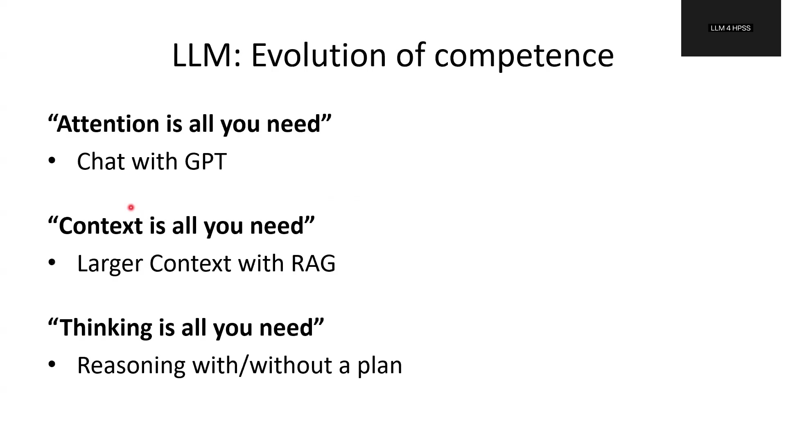
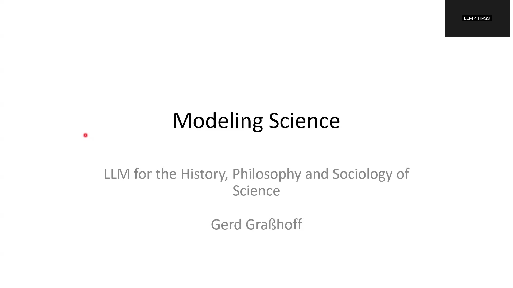
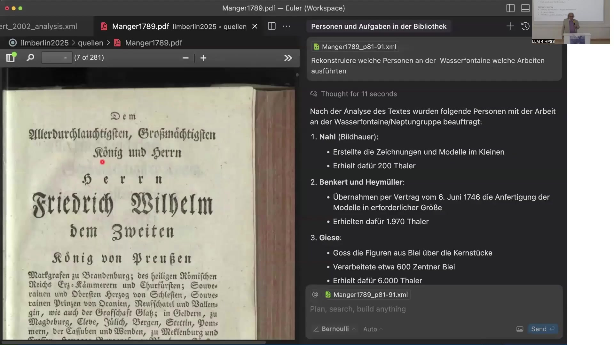
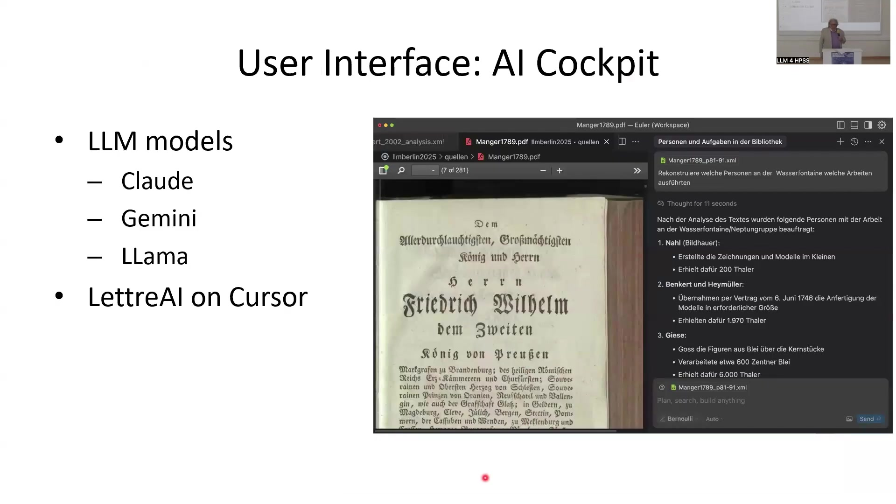
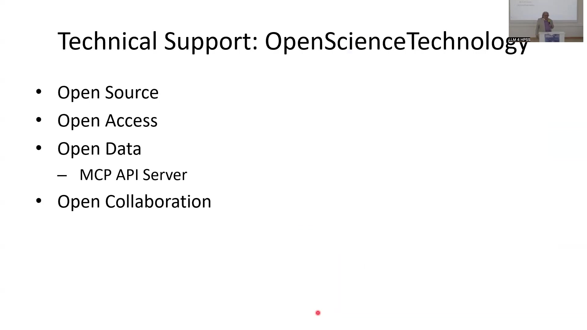

8 Modeling Science: LLM for the History, Philosophy and Sociology of Science
8.1 Overview
The presentation addresses the limitations of current Large Language Models (LLMs) for scholarly inquiry, particularly in the history, philosophy, and sociology of science (HPSS). It identifies key missing capabilities in LLMs, including the ability to counter hallucination, understand meaning beyond embedding vectors, formulate justified true statements, avoid repeating unreliable media content, seek best justification, and plan scientific inquiry.
The core proposed solution is the concept of “Validation is all you need,” which involves providing reasons, arguments, and evidence for propositions and actions. This capability is framed within a new proposed discipline called Computational Epistemology, requiring epistemic agency to identify propositions, analyze argumentation, and understand historical actors’ intentions, plans, and actions based on documented traces.
A comprehensive research infrastructure is presented to achieve these goals, comprising five key components:
Scholarium (Evidence): Curated scholarly sources validated by editorial boards, including extensive historical collections like the Opera Omnia Euler, Kepler Gesammelte Werke, and Brahe Opera Omnia.
Scholarium (Registry): A structured database serving as an alternative to embedding-based approaches, containing detailed, historically validated content items such as personal chronologies, communication acts, statements, arguments, and records of the use of language, tools, methods, data, and sources. Access is provided via an AI API and the Model Context Protocol (MCP) API.
User Interface (AI Cockpit): A working environment, specifically the LettreAI platform on Cursor, integrating multimodal LLMs (Claude, Gemini, Llama, including Gemini 2.5 for multimodal capability) and featuring a specialized AI agent named “Bernoulli” for historical queries.
FAIR Infrastructure: Utilizing Zenodo, hosted by CERN, for long-term storage and publication of data, ensuring Findability, Accessibility, Interoperability, and Reusability.
Technical Support: Provided by the startup OpenScienceTechnology, focusing on running the infrastructure, including an MCP API Server, and adhering to principles of Open Source, Open Access, Open Data, and Open Collaboration to standardize AI access to knowledge.
The system aims to provide validated, complete answers to complex historical queries by leveraging curated data and instructing LLMs with explicit reasoning rules formulated in natural language. This approach contrasts with reliance solely on unstructured text and embedding vectors, which are deemed insufficient for achieving the required level of justification and completeness for scholarly historical research. The infrastructure is designed to maintain scholarly expertise and ensure the long-term preservation and accessibility of valuable historical data.
8.2 LLM Evolution and Current State

Large Language Models (LLMs) have undergone rapid evolution. The initial focus was captured by the phrase “Attention is all you need.” This capability was subsequently supplemented by the requirement for “Context is all you need,” necessitating larger context windows and methods such as Retrieval Augmented Generation (RAG).
The latest models now propose that “Thinking is all you need” is also required, focusing on reasoning capabilities, potentially with or without an explicit plan. This represents the current state of LLMs, integrating attention, context handling, and nascent reasoning abilities.
8.3 Missing Capabilities in Current LLMs
Current LLMs exhibit several critical missing capabilities essential for reliable scholarly work. A significant problem is the lack of an inherent mechanism or “opponent” to effectively counter hallucination, which is the generation of false or nonsensical information.
Furthermore, embedding vectors, a common representation method, are fundamentally not equivalent to the meanings of expressions. LLMs tend to formulate responses that may sound plausible or good but are factually false. They also frequently repeat content sourced from internet media without sufficient validation, treating it as knowledge.
Current models lack the ability to actively seek out and prioritize what is best justified based on evidence or reasoning. Finally, they are unable to formulate effective plans for conducting scientific inquiry. These identified capabilities are absent in existing LLM models, and it is asserted that current technologies offer no realistic prospect of achieving these missing goals.
8.4 Validation and Computational Epistemology

A critical requirement identified for advancing LLM capabilities in scholarly domains is validation, summarized as “Validation is all you need.” Validation is defined as the process of providing explicit reasons, arguments, and evidence that support or oppose the truth of a given proposition. It also involves providing reasons for or against the pursuit of specific actions.
To address this fundamental gap in current AI, a new discipline is proposed: Computational Epistemology. This field focuses on developing the methods and methodologies necessary to implement computational validation processes.
Achieving validation requires epistemic agency, which encompasses several key abilities. These include the capacity to identify propositions, which goes beyond merely processing sentences; the ability to analyze and understand argumentation structures within texts and sources; and the capability to identify the intentions, plans, and actions of historical persons as documented and traced in historical documents.
8.5 Working Environment and Inquiry Example

A working environment designed for validated historical inquiry is demonstrated through a screenshot of a web browser interface. The interface features a PDF viewer on the left, displaying a historical source document (Manger1789.pdf), specifically page 7 of 281, containing old German text related to construction under King Friedrich Wilhelm II.
On the right side, a dark-themed panel titled “Personen und Aufgaben in der Bibliothek” houses the search query input and results display areas. The example historical problem addressed is the long-standing dispute among historians of science regarding the involvement and potential responsibility of the mathematician Leonard Euler in the significant failure of the Sanssouci castle water fountain construction in the 18th century. The goal of the inquiry within this environment is to obtain a validated, reliable, and factually correct answer grounded in proven evidence, moving beyond mere hearsay.
An example query formulated in German is “Rekonstruiere welche Personen an der Wasserfontaine welche Arbeiten ausführten,” which translates to “Reconstruct which persons performed which work on the water fountain.” The system provides validated results in a numbered list format. For this specific query, the results identify the key individuals involved: Nahl, a sculptor, who created the drawings and small models and received 200 Thaler; Benkert and Heymüller, who took on the task of producing the models in the required size under a contract dated June 6, 1746, and were paid 1,970 Thaler; and Giese, who was responsible for casting the figures from lead over the core pieces, processing approximately 600 Zentner of lead, and received 6,000 Thaler.
The output references a specific XML file, Manger1789_p81-91.xml. The underlying platform for this working environment is the Cursor environment, which allows the use of AI agents. The specific agent employed for these historical inquiries is named “Bernoulli.” A key challenge highlighted is that obtaining such validated answers requires more than simply reading a single PDF source; it necessitates the ability to search across all available sources, a task for which standard indexing and token-based approaches are deemed insufficient.
8.6 Scholarium: Curated Scholarly Evidence

The first key component of the infrastructure is the Scholarium for Evidence. This component relies on the oversight of a Curated Scholarly Editorial Board, ensuring the scholarly reliability of the sources.
Examples of these foundational curated sources include the Opera Omnia Euler, a monumental collection comprising 86 volumes of Euler’s work, which underwent scholarly editing for approximately 120 years by various scholars and was completed two years prior. This comprehensive edition includes all of Euler’s letters and his 866 publications. Complementary scholarly reliable sources integrated into this component include the Kepler Gesammelte Werke and the Brahe Opera Omnia.
8.7 Scholarium: Registry instead of Embeddings

The second key component is the Scholarium as a Registry, which serves as a novel substitution for conventional embedding-based approaches. This component is a curated database containing a very detailed inventory of content items representing historically proven activities, all rigorously validated by sources.
The types of content recorded include personal actions, various communication acts such as letters, publications, and reports, as well as statements, implications, arguments, and inquiries. The registry also meticulously documents the use of language, terminology, and concepts by historical figures, along with their use of concepts, relations, models, methods, tools, devices, data, information, evidence, and sources. Access to this detailed and validated historical record is provided through both a dedicated AI API and the Model Context Protocol (MCP) API.
8.8 User Interface: AI Cockpit
The user interface component, referred to as the AI Cockpit, operates on the LettreAI platform within the Cursor environment. This interface integrates multiple accessible multimodal LLM models, including Claude, Gemini, and Llama.
The system leverages the capabilities of multimodal models, specifically mentioning Gemini 2.5, which can combine information from both text and images, a feature deemed beneficial for solving the requirements of the historical inquiry tasks.
8.9 FAIR Infrastructure
A crucial component is the FAIR Infrastructure, designed for the long-term storage and publication of the project’s data while adhering to the FAIR principles (Findability, Accessibility, Interoperability, and Reusability).
The specific tool utilized for this purpose is Zenodo, which is hosted by CERN in Geneva. Zenodo provides the necessary capabilities to host the project’s data reliably for many years.
8.10 Technical Support: OpenScienceTechnology
Technical support for the infrastructure is provided by the startup OpenScienceTechnology. This entity is responsible for running the system’s infrastructure and specifically provides an MCP API Server.
The technical support operates under principles of Open Source, Open Access, Open Data, and Open Collaboration. The MCP API Server plays a key role in attempting to standardize AI access APIs to knowledge on a worldwide scale through a standardized interface, facilitating open collaboration.